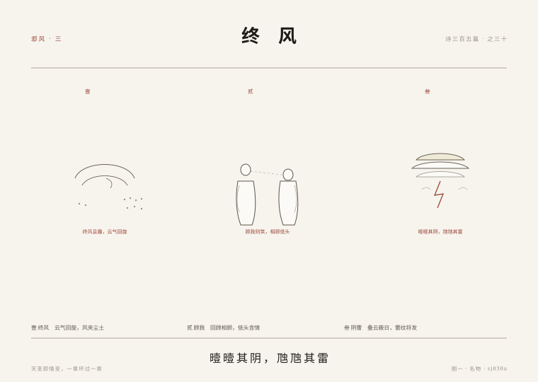
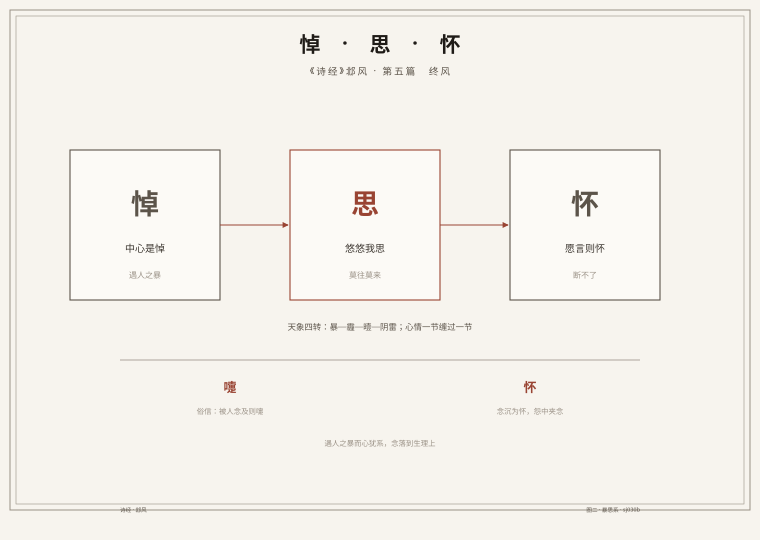

第三十篇 终风
邶风 · 之三 SJ030
朗读 · 普通话
依经文正文朗读，句读从文；不配乐、不改速、不加拖腔。全库同一音色（豆包 TTS），非播音员录制。
一 解题
诗三判：
- 谁在说：一个被人粗暴对待、心里却仍系着对方的人。天写得越坏，心里那点念越清楚。
- 说什么事：那人终日风暴，相顾则笑、谑浪笑傲；自己心中伤悼。愿他肯来，却又莫往莫来；醒着不睡，念得自己打喷嚏、念得自己怀想。
- 为何编在此：《日月》是怨其失道，此篇是遇人之暴而心犹系。同写「礼之失」，彼向外责，此向内缠；邶风之「变」，愈转愈细。
《毛序》：「《终风》，卫庄姜伤己也。遭州吁之暴，见侮慢而不能正也。」——系于庄姜见侮。
朱子《诗集传》：「庄公之为人，狂荡暴疾，庄姜盖不忍斥言之，故但以终风且暴为比。」——朱子以为以风雨阴晴比人之暴而不我亲。
本库的看法：这首诗的骨在遇人之暴而心犹系——「愿言则嚏」，想念落到生理上。
天时而风、霾、曀、阴、雷，一章坏过一章；人则谑浪、不来、不寐。外在天变与内在心缠互写。被这样对待，本该断念，可是「悠悠我思」「愿言则怀」，断不了。这与召南「守、不争」不同：召南是自持而静，此篇是被乱风裹住、挣不脱。
二 经文
第一章
終風且暴，顧我則笑。謔浪笑敖，中心是悼。
第二章
終風且霾，惠然肯來。莫往莫來，悠悠我思。
第三章
終風且曀，不日有曀。寤言不寐，願言則嚏。
第四章
曀曀其陰，虺虺其雷。寤言不寐，願言則懷。
分章：毛传、朱子皆四章，章六句。三、四章以「寤言不寐」重起；一章写暴与笑，二章写不来与思，三章写不寐而嚏，四章写不寐而怀。天象四转：暴—霾—曀—阴雷。
三 韵读
| 一 |
暴、悼（藥部）；笑、敖（宵部） |
藥部／宵部 |
| 二 |
霾、來、思 |
之部 |
| 三 |
曀、曀、嚏 |
質部 |
| 四 |
雷、懷 |
微部 |
一章药、宵两声，一沉一扬，像暴笑夹着伤悼；二章之部悠长，正合「悠悠」；三章质部入声逼仄，睡不着；四章微部舒缓而沉，落到「怀」字。全篇落脚声是「怀」——怨到末了，还是怀想。
四 字义与名物
- 終風——既风且暴，终日刮着的风。终，竟、既。不是「最终的风」。
- 暴——疾风，一说暴雨。
- 顧我則笑——相顾而笑（一说调笑、戏弄）。顾，回头看。
- 謔浪笑敖——戏谑放荡、傲而不敬。谑，戏谑；浪，放荡；敖，傲。
- 中心是悼——心中伤悼。悼，哀伤。
- 霾（mái）——风夹尘土，天色浑浊。
- 惠然——顺心的样子。惠，顺。
- 肯來——肯来相就。
- 莫往莫來——没有人来往（一说不往不来）。
- 悠悠：思虑绵长不绝。
- 曀（yì）——阴沉而有风，蔽日不见日。
- 不日有曀——没有晴日，又是一片阴沉。有，又。
- 寤言不寐——醒着，睡不着。寤，醒；寐，睡。言，语助。
- 願言——念着、想着。愿，念。
- 嚏（tì）——打喷嚏。古人俗信：被人念及，则打喷嚏。不是「鼻塞」之泛说。
- 曀曀——阴沉之貌。
- 虺虺（huǐ）——雷将发之声。
- 懷——怀想，思念。
五 今译
第一章
整日刮风又狂暴，回头看我就发笑。戏谑放荡又傲慢，我心里实在伤悼。
第二章
整日刮风又扬尘，可肯顺心来一趟？没人来往没音讯，长长久久我在想。
第三章
整日刮风又阴沉，不见晴日又转阴。醒着呀睡不着，念得我打起喷嚏。
第四章
沉沉一片阴云，轰轰雷声将起。醒着呀睡不着，念得我把他怀想。
译注：「终风」译「整日刮风」，终为既、竟；「顾我则笑」取「相顾而笑」，兼存调笑一说；「嚏」依古俗信译为打喷嚏——被人念及则嚏；「曀」「霾」皆天色之变，与人心之缠并写。
六 章旨
一章：暴而笑，心悼。外暴而外笑，内自伤悼。
二章：不来而思。望其一来，终归莫往莫来，思乃悠悠。
三章：不寐而嚏。念深至生理，喷嚏因念而起。
四章：不寐而怀。天阴雷鸣，念沉为怀。
天象一章坏过一章：暴—霾—曀—阴雷；心情一节缠过一节：悼—思—嚏—怀。「愿言」两见，是断不了的根：明知其暴，念仍往彼处去。
此即本卷所谓「遇暴之系」，与召南的自持不竞正成对照。
七 诗教
- 赋：以天气与心境并陈，直写所遇与所思；风雨阴晴是眼前境，亦是胸中境。
- 观：可观一「系」。观人于所不当系而犹系，可见情之难断；亦观己：念起而不自止，正是待省处。
- 群：所思是二人之事；「莫往莫来」之叹，正见二人本应有往来而竟绝。
- 怨：有怨，怨其暴、其傲、其不来；但怨中夹着念，未作决绝之辞。
八 分寸与边界
- 不可把「终风」解作「最终之风」「终止的风」。终风是既风且暴、终日不息之风。
- 不可把「顾我则笑」读成相亲相爱之笑。此处笑带谑浪傲慢，是轻侮，非温柔。
- 不可把「嚏」只解作生理上的鼻塞喷嚏。诗中用古俗信：被人念及则嚏，是思念落到身上的说法。
- 不可把「曀」「霾」「阴雷」解成写实气象日记。四者皆比况人之态度与心境，天变即情变。
- 不可把此篇读作「痴情无悔」的正面赞美。诗中有悼、有不寐，是被系住的苦；本库只述其缠，不劝人效。
九 存疑
- 所遇何人：毛序系于州吁之暴；朱子以为庄公狂荡；一说男女相悦而对方轻己。本库取「遇人暴慢而心犹系」。
- 「顾我则笑」：一说相顾而笑，一说调笑戏弄。本库两存，义近轻慢。
- 「莫往莫来」：一说无人往来，一说我不往、彼不来。本库取「彼此不相往来」。
- 「嚏」之俗信：古人以嚏为人念己；一说「嚏」为「踊」之类心动感于身。本库从俗信说。
- 比兴还是赋：朱子以风雨阴晴为比；一说直赋当时之境。本库取境情相即，比赋两存。
十 跨典
- 《邶风·日月》「乃如之人兮，逝不相好」——同卷相待失道；彼向外责以古道，此向内缠而难断。
- 《郑风·子衿》「青青子衿，悠悠我思」——「悠悠我思」一语相通；彼盼一见，此叹不来。
- 《王风·采葛》「一日不见，如三秋兮」——念之深长，同为不寐之思。
- 《礼记·檀弓上》「心丧」与思慕之节——此篇「愿言」不止，是情逾于节；古人观情，以能自节为贵。
- 古俗「喷嚏为念」：后世诗词沿用「喷嚏」代人念我，最早的明文即见于此篇；可与后世「那人正想我」一类俗谚参看。
十一 双卡与图
双卡五对：
| 终风（既风且暴） |
最终之风（误训） |
| 顾我则笑（轻慢之笑） |
相亲之笑（误读） |
| 嚏（念及则嚏） |
单纯鼻塞（误训） |
| 曀、霾、阴雷（比况） |
气象日记（误读） |
| 心犹系 |
心已绝 |

图一 · 风·顾笑·阴雷 名物图

图二 · 暴—思—系 义理图
读图三处：
- 天色三转而不画全暴：名物图取三处特写——终风云气回旋与飞尘疏密、两人相顾之姿、叠云与雷纹回旋；不画整幅风暴，求可辨不求像真。
- 人只取「顾笑」一侧：一章「顾我则笑」画两人侧影，一人回顾、一人低头，以姿态示顾；不画表情符号，不画全人。
- 义理三格是「系」的三段：悼—思—怀，箭头一线不断；末两尺标出「嚏」与「怀」，见念落到身体上。